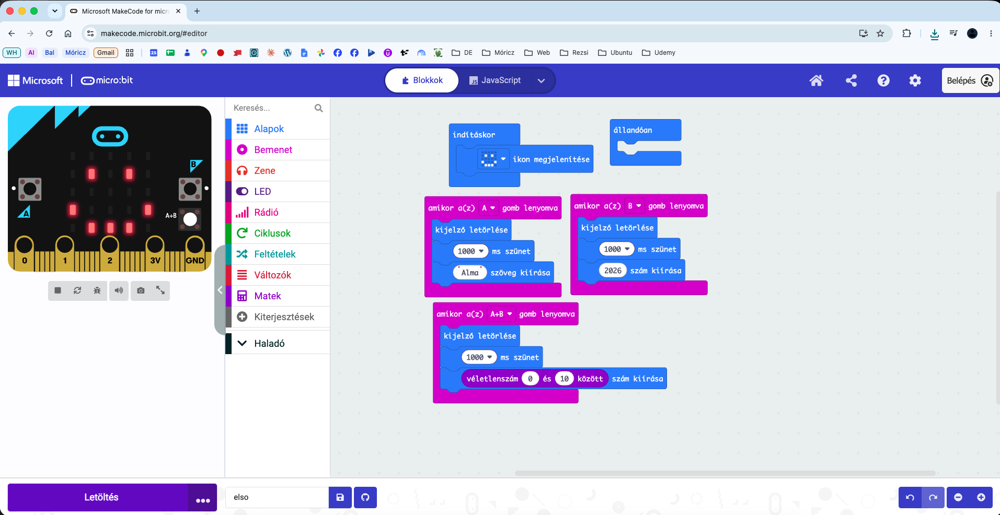

Az első programunkban képet, szöveget és számokat jelenítünk meg, majd a micro:bit gombjaival irányítjuk a kijelzőt.
Mit fogsz megtanulni?
eligazodni a MakeCode felületén,
blokkokat elhelyezni és összekapcsolni,
az indításkor és a gombeseményeket használni,
ikont, szöveget, számot és véletlenszámot megjeleníteni,
a programot a szimulátorban kipróbálni.
1. Mi az a micro:bit?
A BBC micro:bit egy kisméretű, programozható számítógép. Az előlapján 25 LED-ből álló kijelző, valamint egy A és egy B gomb található. A hozzá készített programokat a böngészőben működő Microsoft MakeCode felületen állíthatjuk össze.
Nyisd meg:makecode.microbit.org, majd válaszd az Új projekt lehetőséget! A projekt neve legyen: elso.
2. A MakeCode felületének részei
Szimulátor: a bal oldalon látható virtuális micro:bit, amelyen rögtön kipróbálhatjuk a programot.
Blokkpaletta: középen találhatók a blokkok kategóriái, például Alapok, Bemenet és Matek.
Munkaterület: a jobb oldali terület, ahol összeállítjuk a programot.
Projekt- és vezérlősáv: alul található a projekt neve, a mentés és a Letöltés gomb.
Fontos: az indításkor blokk a program kezdetén egyszer fut le. Az állandóan blokk a benne lévő utasításokat folyamatosan ismétli.
3. Fontos fogalmak
Program: utasítások rendezett sorozata.
Blokk: egy utasítás vagy művelet a MakeCode-ban.
Esemény: olyan történés, amely elindít egy programszakaszt, például egy gomb lenyomása.
Szimulátor: a képernyőn működő virtuális micro:bit.
4. Az első program elkészítése
Indításkori kép: az Alapok kategóriából helyezd az ikon megjelenítése blokkot az indításkor blokkba, majd válassz egy tetszőleges ikont.
Az A gomb programja: a Bemenet kategóriából húzd ki az amikor az A gomb lenyomva blokkot. Kerüljön bele a kijelző törlése, 1000 ms szünet, majd az Alma szöveg kiírása.
A B gomb programja: készíts eseményt a B gombhoz is. Töröld a kijelzőt, várj 1000 ms-ot, majd írasd ki a 2026 számot.
Az A+B gombok programja: állítsd a gombválasztót A+B értékre. A kijelző törlése és a szünet után írasd ki a Matek kategória véletlenszám 0 és 10 között blokkjának eredményét.
Próba: indítsd újra a szimulátort, majd próbáld ki külön az A, a B és az A+B gombokat.
Időmérték: 1000 ms, vagyis 1000 milliszekundum pontosan 1 másodperc.
5. Mintaprogram
Az elkészült program az alábbihoz hasonló. A blokkok helye eltérhet, ez a működésüket nem befolyásolja.

6. Mit csinál a program?
Indításkor megjelenít egy választott ikont.
Az A gomb lenyomásakor egy másodperc várakozás után kiírja: Alma.
A B gomb lenyomásakor egy másodperc várakozás után kiírja: 2026.
Az A és B gomb együttes lenyomásakor 0 és 10 közötti véletlenszámot jelenít meg.
7. Gyakorlófeladat
Az A gomb az Alma helyett a saját keresztnevedet írja ki.
A B gomb a kedvenc számodat jelenítse meg.
Az A+B gomb 1 és 6 közötti számot sorsoljon, mint egy dobókocka.
Válassz másik indításkori ikont.
Plusz kihívás: változtasd meg a várakozási időt 500 ms-ra! Mit tapasztalsz?
8. Ellenőrző kérdések
Mi a különbség az indításkor blokk és egy gombesemény között?
Hány másodperc 1000 milliszekundum?
Melyik kategóriában található a véletlenszám blokk?
Mire használjuk a szimulátort?
9. Összefoglalás
A micro:bit programját blokkokból építjük fel a MakeCode-ban.
Az események hatására különböző programszakaszok indulnak el.
A LED-kijelzőn ikont, szöveget és számot is megjeleníthetünk.
A Matek blokkjai között véletlenszámot is előállíthatunk.